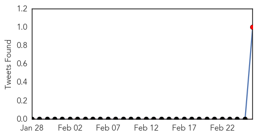
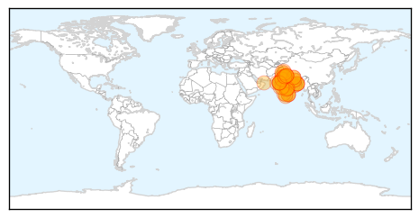
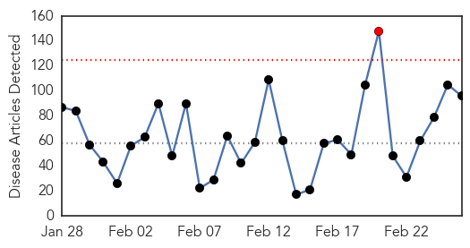

Swine Flu
30-Day Web Trend
13 alerts, 8 warnings

30-Day Twitter Trend
2 alerts, 0 warnings

Article Locations
Article Confidences

Top Articles:
- 1.000
- Swine flu: what is the H1N1 virus and how is it spread?
- 1.000
- Tehelka - Investigations, Latest News, Politics, Analysis, Blogs, Culture, Photos, Videos, Podcasts
- 1.000
- India urges calm on swine flu
- 1.000
- India’s Health Minister Pleads With Citizens To Remain Calm Amidst Swine Flu Outbreak
- 1.000
- Expert suggests new strains behind deaths, calls for virus studies
- 1.000
- 13 people infected with swine flu virus
- 1.000
- The Kathmandu Post
- 1.000
- Modern day plague: Swine flu deaths pass 800 in India
- 1.000
- Total swine flu cases reach 13 across the country
- 1.000
- ‘Isolation wards a must at new hospitals’
- 0.999
- Swine flu Death toll Reaches 242
- 0.999
- Resistant strain of swine flu feared; virus killing thousands in India
- 0.999
- Swine Flu Surge in India Fuels Concern About Resistant Strains
- 0.998
- Health experts say taking flu shots can reduce H1N1 risk
- 0.998
- Jammu doctor dies of swine flu in Delhi
- 0.998
- 449 swine flu cases in UP, toll reaches 12
- 0.998
- 33 new cases of swine flu in Telangana
- 0.998
- NBMCH doctors treating swine flu patients fall sick
- 0.997
- Swine flu in Maharashtra: 112 deaths so far, 166 new cases reported
- 0.997
- swine flu patients
- 0.997
- Govt Says ‘Don't Panic' As Swine Flu Death Toll Reaches 926
- 0.997
- Govt finds 18 H1N1 clusters in Chennai
- 0.996
- Swine flu claims 51 more lives; death toll reaches 926, over 16,000 affected
- 0.995
- HC to govt: Make medicines, masks available to people
- 0.994
- High Court asks Government for its swine flu strategy
- 0.993
- Scientist Calls For Developing Universal Swine Flu Vaccine
- 0.993
- 76-year-old dies of swine flu
- 0.993
- Swine flu outbreak in India kills 900 and infects 16,000 26/02/2015
- 0.991
- Swine Flu Deaths Crosses 250 Mark In Rajasthan
- 0.991
- Swine flu: Nine affected in Bihar
- 0.991
- Swine flu: Four affected in Nagaland
- 0.990
- Swine flu fears cause Indian city of Ahmedabad to ban public gatherings
- 0.990
- Swine flu deaths crosses 250 mark in Rajasthan
- 0.989
- Nadda: Govt 'serious' about taming swine flu, unwanted panic created by reports
- 0.988
- Jammu doc dies of suspected H1N1
- 0.987
- No scarcity of swine flu medicine, says health minister
- 0.986
- Government serious in dealing with swine flu situation: Health Minister
- 0.985
- Swine flu toll rises in Nepal
- 0.984
- High Courts ask central, state government for swine flu strategy
- 0.983
- Expert team to assess swine flu situation in Kashmir
- 0.981
- Court pulls up Centre, State on steps taken to control swine flu
- 0.972
- Swine Flu scare notwithstanding, Vibrant Kutch Summit begins today
- 0.969
- Health Department Worried About Spread of Flu
- 0.965
- Indian city bans public gatherings over swine flu fears
- 0.965
- Swine flu claims youngest victim in City
- 0.937
- 2 more die of H1N1, 83 test positive; need to look at infection afresh, say doctors
- 0.933
- Swine flu in India: Centre recommends vaccination for healthcare workers
- 0.933
- Dotasar claims 1,000 deaths against govt. figure of 243 due to Swine Flu in Raj, demands resignation
- 0.925
- 2 more H1N1 cases reported in city
- 0.923
- Thane witnesses three swine flu deaths in February
Showing top 50 articles...
Top Tweets:
- 0.821
- Vaccine Narratives and Public Health: Investigating Criticisms of H1N1 Pandemic Vaccination http://t.co/gngXqTqRQl
- 0.583
- 6 years after the H1N1 pandemic, virus STILL hasn't drifted enough to require an update for next winter's flu shot. http://t.co/IHuX01qwQz
Unknown
30-Day Web Trend
1 alerts, 0 warnings

30-Day Twitter Trend
0 alerts, 0 warnings

Article Locations

Article Confidences

Top Articles:
- 0.995
- Human-to-human transmission of fatal tick virus confirmed, Others news, Health News, AsiaOne YourHealth
- 0.967
- 3 more flu-related deaths in Delaware
- 0.957
- BREAKING NEWS: Three wards closed at Boston’s Pilgrim Hospital due to norovirus
- 0.956
- Norovirus outbreak closes three wards at Boston Pilgrim Hospital
- 0.955
- Record number flu cases reported - Radio Sweden
- 0.952
- Bird flu infections in first 2 months of 2015 exceed all cases in 2014
- 0.921
- CDC Currently Investigating C-Diff Bacteria Link To Medical Offices : LIFE : Tech Times
- 0.917
- Chicago Tribune
- 0.917
- Chicago Tribune
- 0.917
- Chicago Tribune
- 0.917
- Chicago Tribune
- 0.917
- Chicago Tribune
- 0.917
- Chicago Tribune
- 0.917
- Chicago Tribune
- 0.917
- Chicago Tribune
- 0.917
- Chicago Tribune
- 0.917
- Chicago Tribune
- 0.917
- Chicago Tribune
- 0.917
- Chicago Tribune
- 0.917
- Chicago Tribune
- 0.917
- Chicago Tribune
- 0.917
- Chicago Tribune
- 0.917
- Chicago Tribune
- 0.917
- Chicago Tribune
- 0.917
- Chicago Tribune
- 0.917
- Chicago Tribune
- 0.917
- Chicago Tribune
- 0.917
- Chicago Tribune
- 0.917
- Chicago Tribune
- 0.917
- Chicago Tribune
- 0.917
- Chicago Tribune
- 0.917
- Chicago Tribune
- 0.917
- Chicago Tribune
- 0.917
- Chicago Tribune
- 0.917
- Chicago Tribune
- 0.917
- Chicago Tribune
- 0.917
- Chicago Tribune
- 0.906
- More typhoid cases registered in Kampala
- 0.906
- More typhoid cases registered in Kampala
- 0.906
- Deadly 'Suberbug' C.Difficile Could Be Waiting In Your Doctor's Office
- 0.883
- KRNV, Reno, NV
- 0.883
- KRNV, Reno, NV
- 0.883
- KRNV, Reno, NV
- 0.865
- Nasty stomach bug C. diff. becoming far more common
- 0.836
- News and Press Release Distribution
- 0.834
- Three Polish Wild Boar Test Positive for African Swine Fever
- 0.833
- Consortium Aims to Eliminate Malaria on Hispaniola by 2020 Starting With $29.9 Million Grant to CDC Foundation
- 0.827
- Mass HIV Infection Kills Fifth Villager in Cambodia Roka Commune
- 0.820
- Deadly C. difficile affected almost half a million in the U.S over one year
- 0.811
- CDC finds fatal bacteria C. difficile’s link to doctors’ clinics
Showing top 50 articles...
Top Tweets:
- 0.745
- El REM es un paso del ciclo, no un ciclo en sí.
- 0.736
- Tanta moronidad en un solo gesto debe ser ilegal.
- 0.720
- The change allowed most of the viruses circulating in the flu season to elude protection provided by the flu vaccine 2/2
- 0.716
- Hay un recogido de espejuelos en la UPR en Cayey. Me avisas si tienes espejuelos para donar. @uprcayey
- 0.548
- Resistencia del Anopheles albimanus, uno de los principales vectores de la malaria en el Perú, a insecticidas: http://t.co/QUCNqyFIAV
- 0.536
- Saudi Arabia reports 5 more MERS cases http://t.co/yTZYag5ePn